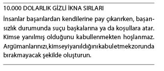

Duyguların Gizli İkna Amacıyla Kullanımı
Eminim insanların kararları önce duygusal değerlendirmeler sonucu aldığını, ardından bu kararları akla uygun göstermek amacıyla olguları kullandığını duymuşsunuzdur. Bu söz kesinlikle doğrudur. Hepimiz, duygusal varlıklarız. Duygular hayatımızın her anını denetler. Mantıklı düşünmeyiz; mantık, her ne kadar kimi kararlarda rol oynasa da, hep ikinci planda kalır. Duygular çok etkilidir. Duyguları, fark ettirmeden çıkarınıza olacak şekilde kullanabilirsiniz. Çünkü, birçok insan açısından duyguların gücü, etkisi ve denetimi, büyük ölçüde kritik düşünceyi devre dışı bırakan bilinçaltındadır.
Yaşamımızdaki olayların bize neler duyumsattığını pek düşünmeyiz. Sadece, duyumsarız. Bulunduğumuz ortama duygusal tepkiler veririz. Bu gücü ikna oyununda kullanabiliriz. Ancak, duyguların gücünü kullanmaya kalkışmadan önce, hedefinizin amaçlarını bilmeniz gerekir. Bunu doğru bir şekilde bilemezseniz, hedefinizin herhangi bir uyarıma vereceği tepkiler konusundaki tahminlerinizde yanılabilirsiniz.
“Bilgelerin amacı, hazzı garantilemek değil; acıdan kaçırmaktır.”
Aristo
Duyguların İnsanları Birbirine Bağlayan, İkna Eden Gücü
Bir süre önce iş adamlarını bir araya getiren bir toplantıya katılmıştım. Toplantıya Habitat for Humanity örgütünden konuk bir konuşmacı da katılmıştı. Örgüt dinleyicilerden sırf inşaat çalışmalarına zaman, para ve malzeme yardımı yapmalarını isteseydi bile epey yardım toplayabilirdi. Ancak, böyle davranmadılar. Konuşmacı, bunun yerine Nelson ailesinin (isimler uydurmadır) hikâyesini uzun uzun anlattı. Yaptıkları işlerden ve yaşadıkları sıkıntılardan söz etti. Kızları Sara’dan (bu isim de uydurmadır) bahsetti. Altı yaşındaki Sara, doğduğu günden bu yana, tek odalı evlerinde anne babasıyla aynı odada uyumuştu.
Tahmin edeceğiniz gibi; aileye bir Habitat evi teslim edildiğinde büyük bir kutlama gerçekleştirilirdi. Törene, gönüllülerin tamamı da katıldı. Söz konusu aile için de büyük gün gelmiş, ev gözü yaşlı, minnettar aileye teslim edilmişti. Ancak, bir eksik vardı: Sara. Herkes, Sara’yı aramaya başladı. Kızı, konuşmacımız buldu. Sara yeni evlerinin odalarından birinin ortasında oturmuş ağlıyordu. Neden ağladığı sorulduğunda, dudakları titreyerek, “Burası gerçekten benim odam mı?” diye sordu. Yeni evlerini ne kadar güzel olduğunu, bu olanlara inanamadığını söyledi.
Hikâye bittiğinde, dinleyicilerin birkaçı ağlıyordu. Evet, Habitat örgütü sırf yardım istemekle yetinebilir, oldukça da yardım toplayabilirdi. Ancak, insanların gönül yaylarını böyle duygusal bir şekilde germelerinin, dinleyiciler üzerinde büyük etkisi oldu. Hikâye sayesinde gönüllülerin sayısı arttı, başka Sara Nelsonlar da parlak bir geleceğe kavuştu.
Gördüğünüz gibi; duygular aracılığıyla insanları ikna etmek, olgularla ikna etmekten çok daha etkilidir. Bunun geçerli olmasının nedenlerinden biri, olguların soğuk ve hissiz olmasıdır. Duygular ise mesajınızı iletmenizi ve insanları arzuladığınız eylemleri gerçekleştirmeye yönlendirmenizi sağlar. Ancak, tıpkı daha önce sözünü ettiğimiz sonuç odaklı düşünce gibi, bu yöntemi kullanırken de, karşımızdaki insanın yapmasını istediğimiz şeyler konusunda çok net olmamız gerekir. Oluşacak enerjiyi ne tarafa yönlendireceğiniz konusunda somut bir planınız olmaması durumunda, insanları duygulandırmak tehlikeli bir hal alabilir. Bir planınız mutlaka olsun. Bu yolla, karşınızdaki insanlarla duygusal bir bağ kurduğunuzda, ne yapmaları gerektiğini net bir şekilde anlayabilirler. (Bu da sizin yapmalarını istediğiniz şey olacaktır: Bağış, oy, satış vs.)
Duyguların Eşsizliği
Önce duygular ortaya çıkar ve beyne yol gösterir. Düşünceler önce duygulara, daha sonra mantığa uğrar. Duyguları kullanarak insanları ikna etmek istiyorsanız, ev ödevinizi iyi yapmanız gerekir. Hangi duyguları uyandırmak istediğinizi ve bu duyguların hedefinizi hangi noktalara götüreceğini çok iyi bilmelisiniz. Herhangi bir insandaki olumsuz duygusal tepkileri azaltmak istiyorsanız, öncelikle olumlu duyguları uyandırmalı, ardından bu duyguları ikna amacıyla kullanmalısınız.
Öncelikle Duygusal, Ardından Mantıklıyız
Aşağıdaki ifade, maalesef doğrudur ve ilk bakışta insanların fikirlerini değiştirmeyi güçleştirir. Ancak, biraz daha yakından bakmayı deneyin.
Bu doğruysa -ki öyle- karşımızdaki insanı bizim yolumuzun doğru olduğu konusunda ikna etme umudumuz olabilir mi? İyi bir gizli ikna ustası, karşı tarafın tutumunu belirleyerek “Hissettiğini, Hissetmişti, Gördüler” tekniği aracılığıyla karşı tarafa bir parça bilgi sunar. Bu da karşınızdaki insanın durumu kurtarmak amacıyla sizin gibi düşünmesine yol açar.
Örneğin; şöyle bir şey diyebilirsiniz: “Bu konuda neler hissettiğini biliyorum. Tanıştığım birçok insan da bir zamanlar böyle hissediyordu. Ancak, yakından incelediklerinde gördüler ki...”
Bu tekniği, profesyonel iş yaşamınızla özel yaşamınızda hissettirmeden kullanabilirsiniz. İşe yarayacağı garantidir. Çünkü, birçok psikolojik unsur iş başındadır. Öncelikle, insanlara, kendilerine benzeyen bir grup insanın da aynı şeyleri duyumsadığını gösterir. (Bu sosyal kanıt, rahatlamalarını ve kalkanlarını indirmelerini sağlar.) Ardından, bu kişilere yeni bilgiler sunar. Beyinlerinin, kendi kendilerine “Bunu bilseydim, her şey çok farklı olurdu” demesini sağlar. Bu yeni bilgi de, o kişinin düşüncelerinin sizinkilerle daha uyumlu bir hal almasına yol açar. Toplumsal normlara uyum göstermek kişiye çok mantıklı gelmeye başlar. Bu, çok gizli bir ikna taktiğidir.
İyi anlaşılması durumunda, karşınızdaki kişinin sizin gibi düşünmesini sağlayacak bir duygusal tepki daha vardır.

Bu tamamen egoya yöneliktir. (Bu da elbette mantıksız bir duygudur.) Birçok insan kötü sonuçlar karşısında sorumluluğu üstlenmez. Suçlayacak birilerini ya da bir şeyleri ararlar. Bir gizli ikna ustası olarak, suçlanacak birini ya da bir şeyleri bulmalarına yardımcı olmalı, ardından iyi niyetli olduklarına vurgu yapmalısınız. Onlara, denetimi ellerinde bulundurmuş olsalardı, daha farklı davranabileceklerini anlatmalısınız. Daha sonra, istediklerinizi yapmalarının, kişisel zaferleri sahiplenmelerini ve büyük başarıların tadını çıkarmalarını sağlayacağını anlatmalısınız.
İnsanlar kesinlik ister. Sürprizler, insan ruhunun derinliklerinde pek hoş karşılanmaz. Neler olduğunu bilmek isteriz. İnsanlara ne tür sonuçlar ortaya çıkacağını kesin bir dille anlatırsanız, peşinizden gelmeleri olasılığını artırırsınız.
“Düşünmek en zor işlerden biridir.
Bu yüzden olsa gerek, çok az kişi düşünür.”
Henry Ford